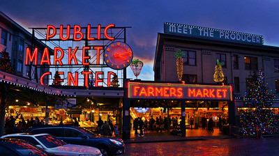

Pikes place is another one of the more popular tourist destinations in Seattle. It is a cozy marketplace bustling with shoppers throughout the markets hours. The fish shop throws fish which is one of the highlights of the market. The main sign is a popular picture oppritunity. The close proximity to the ferry makes it a hot spot for day trips.
